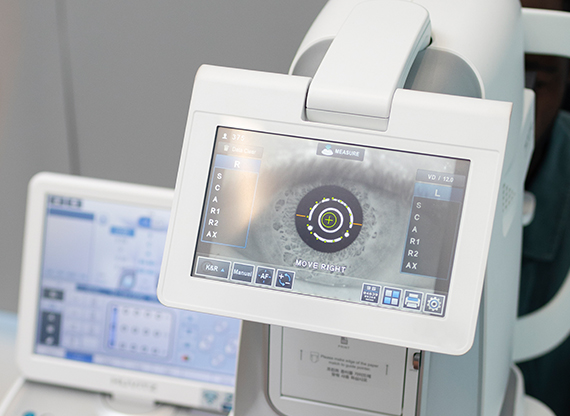

단순 시력 측정만으로 확인 불가한 망막·시신경의 병적 변화 및 잠복 질환 조기 발견

눈은 본격적인 노화가 시작되는 40대부터 안질환
발병 위험이 증가합니다.
시력검사만으로는 녹내장, 황반변성, 당뇨망막병증 등
실명 유발 질환을 확인할 수 없습니다.
이상 증상이 없더라도 정밀 눈 검진을 정기적으로 받는 것이
눈 건강에 좋습니다.
나안 시력 및 렌즈와 안경 등으로 교정한 교정시력 측정
눈의 굴절상태 측정, 근시 난시 원시 등의 굴절 이상 진단
각막전면의 곡률반경 및 굴절도 검사
안구 내부 압력 측정을 통해 녹내장 등 안압관련 질환 진단
결막, 각막, 수정체, 홍채 등 전안부 질병 유무를 확인
각막의 전면과 후면의 모양 및 특성을 종합적으로 파악하여 원추각막 등 숨어있는 각막질환 진단
망막 중심부(시신경, 황반) 상태 확인을 통해 녹내장, 황반변성 등의 시신경, 망막질환 진단
주변부 망막 상태확인을 통해 망막열공, 망막박리 등의 주변부 망막질환 진단
시신경, 망막의 단층촬영을 통해 녹내장, 황반변성 등의 시신경, 망막질환 진단
시야 상태 측정을 통해 녹내장 및 시야 손상 여부 확인
각막의 가장 안쪽 세포의 모양과 수치검사를 통해 각막이영양증 등의 내피세포 질환 진단 및 백내장 수술 등의 안내수술시 각막합병증 발생 가능성 확인
색맹과 색약 여부 확인
검사눈물막의 유지 시간 측정을 통해 안구건조증 유무 및 정도 측정
눈물층 중 수성층 및 지질층의 두께 측정을 통해 안구건조증의 정도 확인 및 치료방침 결정
마이봄샘의 손상 정도 측정을 통해 안구건조증의 정도 확인 및 치료방침 결정

월 화 목 금
am 09:00 ~ pm 06:00토 요 일
am 09:00 ~ pm 04:00점 심 시 간
pm 01:00 ~ pm 02:00수요일, 일요일, 공휴일 휴무입니다.
공휴일 있는 주는 수요일 대체진료입니다.